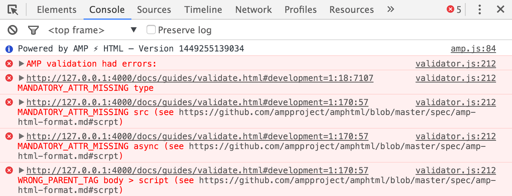
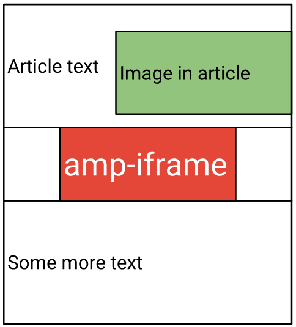
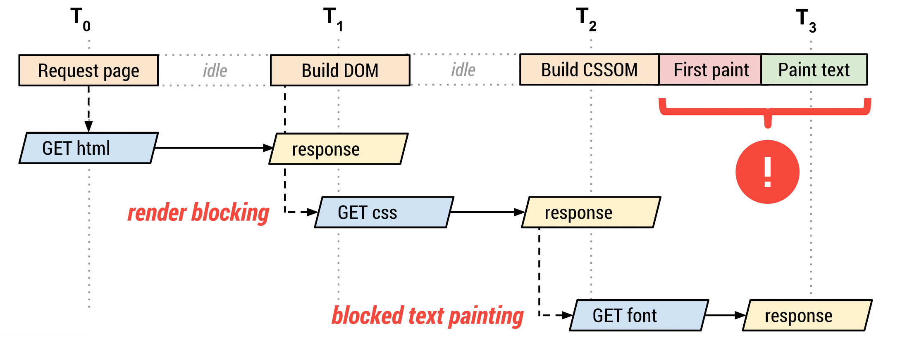

Google AMP — придаем ускорение мобильному вебу мощным пинком
Приходько Александр Murano Software Inc.
Accelerated Mobile Pages
- AMP HTML ⚡
- AMP JS
- AMP CSS
- Google AMP Cache
- JSON+LD
AMP-страницы валидны только если они не содержат ничего "медленного"

#1 Только асинхронные скрипты
<script async
src="https://cdn.ampproject.org/v0.js">
</script>
#2 Всем ресурсам обязательно предустановлены размеры
<amp-img width="200" height="50" src="...">
<amp-iframe width=300 height=300
src="https://foo.com/iframe"></amp-iframe>
#3 Не позволять блокировать рендеринг
<amp-iframe width=300 ... src="..."></amp-iframe>
<script async custom-element="amp-iframe" ...></script>

#4 Весь сторонний JS вынесен из процесса визуализации
- Скрипты не блокируют рендеринг
- Пересчеты стилей только части DOM
#5 Весь CSS должен быть встроен и занимать не более 50Кб
#6 Ни одного HTTP-запроса пока шрифт не начнет загружаться

FOUC вынуждает на такие зверства:
<style>
body {opacity: 0;}
</style>
<noscript><style>
body {opacity: 1;}
</style></noscript>
А что если JS не загрузится?
body {
animation: amp-timeout 0s 5s 1 normal forwards;
}
@keyframes amp-timeout {
0% {opacity: 0;}
100% {opacity: 1;}
}
#7 Минимизируем пересчет стилей
window.getComputedStyle(...);
foo.style.height = '100px';
foo.offsetHeight;
bar.style.height = '200px';
bar.offsetHeight;
// Пересчет стилей
window.getComputedStyle(...);
foo.style.height = '100px';
// Пересчет стилей
foo.offsetHeight;
bar.style.height = '200px';
// Пересчет стилей
bar.offsetHeight;
// Пересчет стилей
window.getComputedStyle(...);
foo.offsetHeight;
bar.offsetHeight;
foo.style.height = '100px';
bar.style.height = '200px';
fastdom-подобное группирование доступа к DOM. В итоге, AMP вызывает только 2 пересчета стилей в процессе загрузки типичной старницы.
#8 Только GPU-оптимизируемая анимация
#9 Приоритизация загрузки ресурсов
- Оптимизация ресурсов находящихся в поле зрения
- prefetch для остальных ресурсов
- lazy-loading для остальных ресурсов
- Все это можно кроссбраузерно настраивать
#10 Лучше загружать страницу мгновенно!
<link rel="prerender" href="https://amp-url">
Недостатки браузерного пререндеринга:
- Может излишне "есть" батарею потому что может запускать JS
- Обычно загружает все ресурсы на странице
- amp-access
- amp-accordion
- amp-ad
- amp-analytics
- amp-anim
- amp-audio
- amp-brightcove
- amp-carousel
- amp-dailymotion
- amp-embed
- amp-facebook
- amp-fit-text
- amp-font
- amp-iframe
- amp-img
- amp-instagram
- amp-lightbox
- amp-list
- amp-mustache
- amp-pinterest
- amp-pixel
- amp-reach-player
- amp-slides
- amp-social-share
- amp-twitter
- amp-user-notification
- amp-video
- amp-vimeo
- amp-vine
- amp-youtube
Что в итоге?
- Весь CSS встроен
- JS асинхронный
- Независимая загрузка шрифтов без FOUC
- Полный контроль над приоритетом ресурсов
- Мгновенная и эффективная загрузка
- Top stories в Google
- Это уже работает!
Кто уже использует?
- Mail.Ru
- Meduza
- Вести.Ru
- Лента.ру
- ТАСС
- МК
- НТВ
- Forbes
- The New York Times
- The Verge
- The Wall Street Journal
- Washington Post
- LinkedIn
- Pinterest
- Twitter
- Drupal
- Wordpress
- Vimeo
- Vine
- YouTube
- И еще 230+ компаний